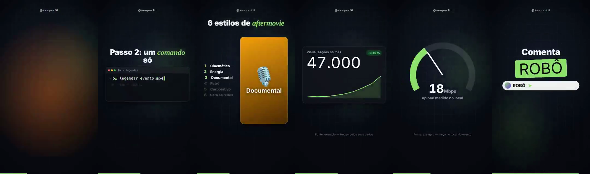

09 · Marketing
BW Reels Pro: reels que ensinam
Em 🎬 MODELOS, a categoria REELS QUE ENSINAM traz 7 modelos no estilo dos reels explicativos que fazem sucesso: um item por vez, ícones que brilham, telas de app e o “Comenta PALAVRA” no fim para puxar comentários. Todos têm vídeo de exemplo.

Top 5 com ícones, terminal, catálogo, painel de números, medidor e o robô.
- 1Passo com ícone: número, nome, um emoji grande com luz e uma frase. Cada passo pode ter a sua cor (campo “Cor desta cena”).
- 2Terminal digitando: escreva o comando e as linhas de resultado — o app digita letra por letra e marca cada linha com ✓.
- 3Painel de números e medidor: número contando com gráfico que se desenha, ou ponteiro subindo até o valor. Sem fonte, não vira vídeo — escreva de onde veio (ex.: “dados próprios”).
- 4Catálogo numerado: até 10 itens; a lista vai acendendo e um cartão colorido mostra cada um (ícones separados por espaço).
- 5Comenta PALAVRA: a palavra aparece grande, é digitada numa caixa de comentário e surge a resposta (“Te mando no direct”).
Dois estilos novos acompanham: TECH (escuro com grade, destaque em itálico) e IMPACTO (preto e rosa, palavras gigantes). Os exemplos são ideias de texto: troque pelos seus números e pela sua palavra.